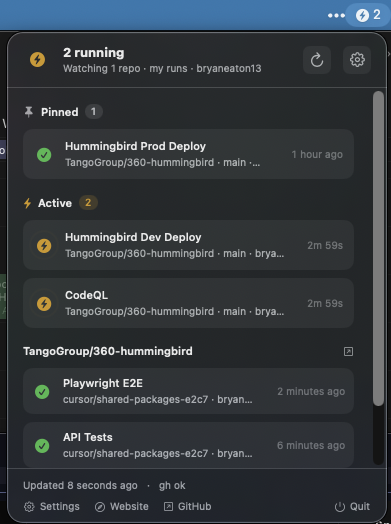
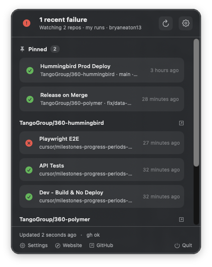

Pins stay on top
Pin Deploy to prod (or any workflow). Turn on Show everyone's runs to keep that job visible when someone else triggers it.
Menu bar app for macOS 14
Pick the repos you ship. Pin Deploy to prod so that run stays on top.
Filter to your commits, PRs, and dispatches. RunBar uses the
gh session already on your Mac.
brew install bryaneaton13/tap/runbar runbar

Pin Deploy to prod (or any workflow). Turn on Show everyone's runs to keep that job visible when someone else triggers it.
Limit the list to the commits, pull requests, and
workflow_dispatch jobs you triggered. The rest of the
org can keep running without filling the panel.
RunBar shells out to the GitHub CLI. It does not store a token or
password. Settings live in ~/.config/runbar/config.json
with owner-only permissions. It does not crawl your disk.
Privacy notes
Install with brew install gh, then
gh auth login. First launch shows a copyable command if
gh is missing or signed out. Upgrade RunBar with
brew upgrade bryaneaton13/tap/runbar.
Getting started
The bar shows how many jobs are in progress. It tints red after a watched failure, including a pinned deploy that failed hours ago.
